In-Thread Replies
Stay in the thread
Inline reply and quote selection let you respond in place instead of jumping across pages.
Read faster, reply in context, and keep your flow on Hacker News
Orange Juice removes the small frictions that slow down daily Hacker News use. You spend less time navigating and more time reading, writing, and keeping up.
Because Hacker News is great, but repetitive UI friction adds up. Orange Juice keeps the original feel while removing the things that cost you time every day.
In-Thread Replies
Inline reply and quote selection let you respond in place instead of jumping across pages.
Unread Tracking
Unread comment highlighting and hide-read controls make it obvious what is new and what you already covered.
Favorites
Use keyboard commands to favorite stories and comments while reading so you can quickly find them again later.
Following
Follow HN users, open a combined activity feed, and keep it ordered the way you read.
This is not a complete list of features, but it shows what we’re actively building and already delivering. Even this subset should make a strong case for installing Orange Juice.
Reply directly inside comment threads and quote selected text with one action.
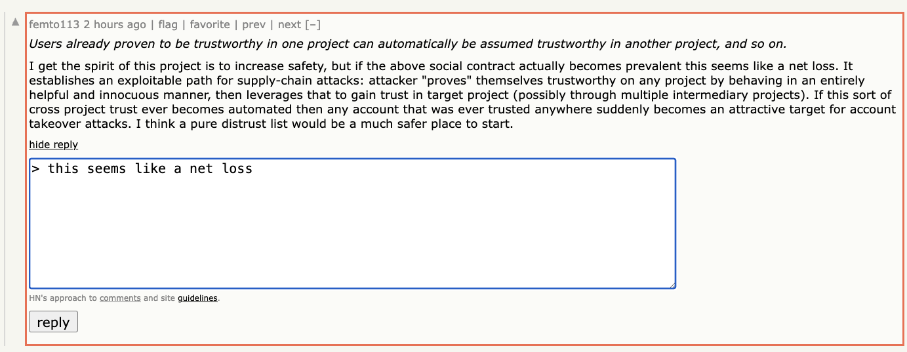
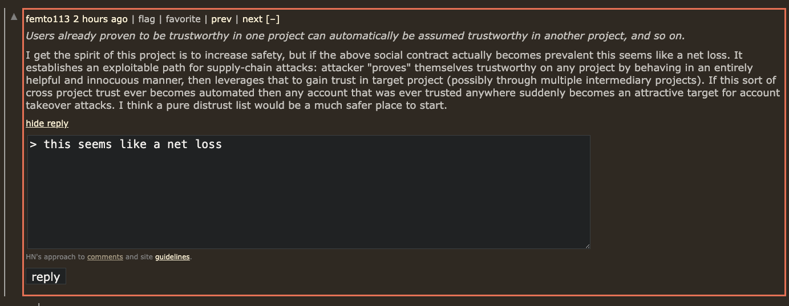
Quickly spot what changed since your last visit without rescanning the entire thread.
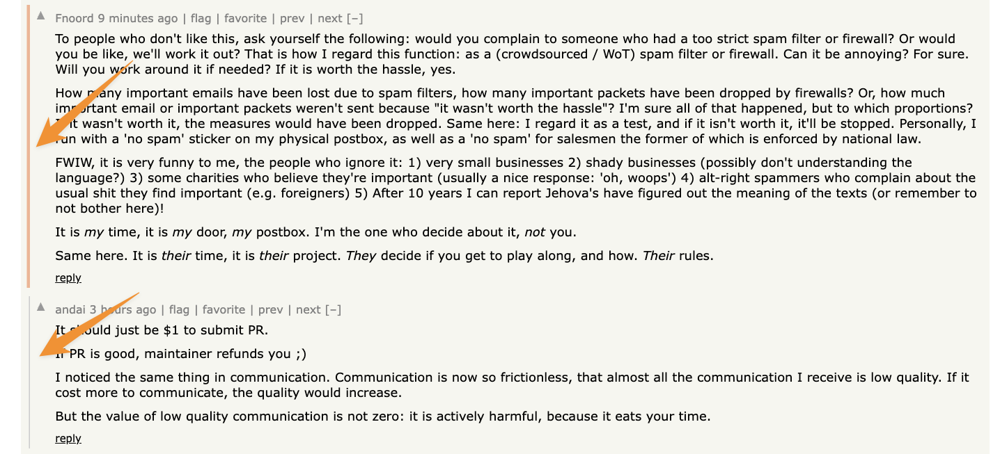
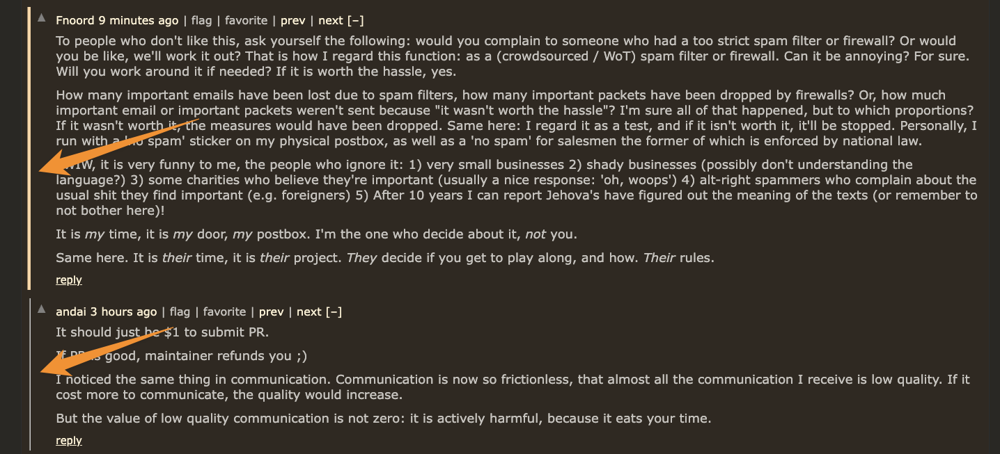
Hover usernames to quickly preview profile details and context without leaving the thread.
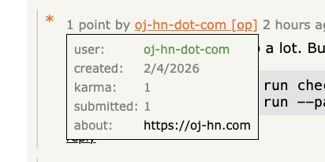
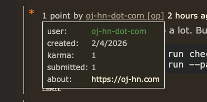
Follow users from anywhere on HN and open a dedicated feed of their recent comments and submissions. Reorder users by dragging, collapse sections you do not want open by default, and refresh one person at a time without reloading everything else.
Small follow buttons appear next to usernames across Hacker News.
The /following page keeps the normal HN look
instead of inventing a separate UI.
Recent fetched activity is cached locally to keep the page fast, with per-user refresh controls when you want a fresh pull.
Clear out items you already opened and focus your attention on new stories.
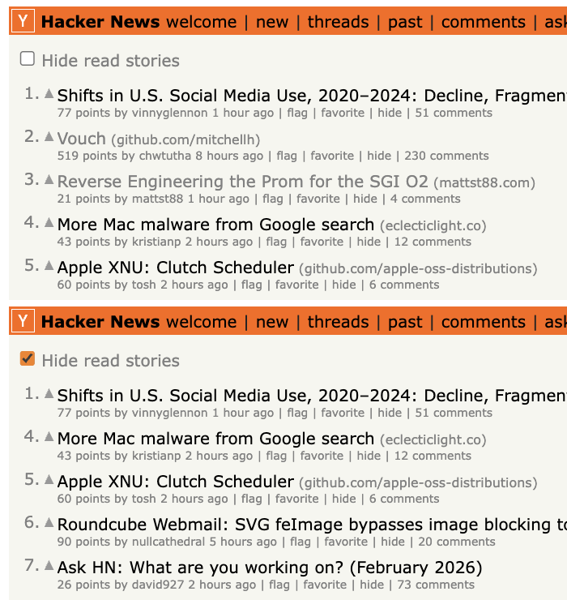
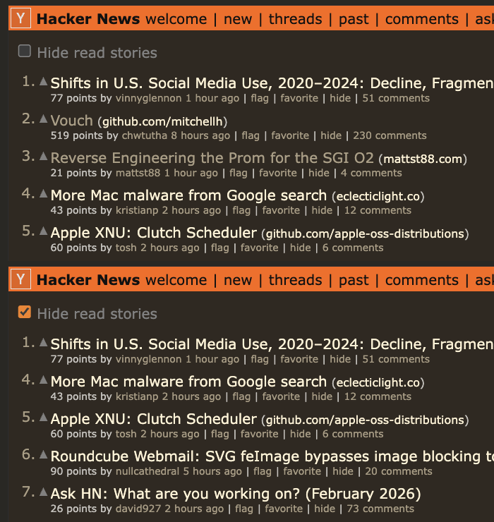
Move through stories and comments faster with keyboard shortcuts, so you can browse without constant mouse movement.
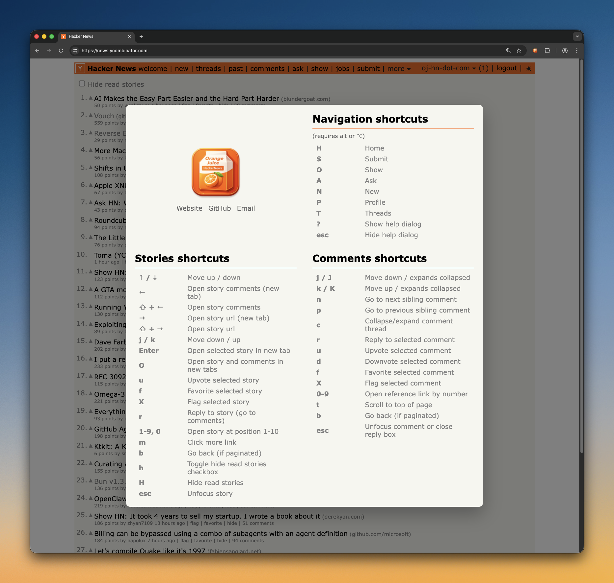
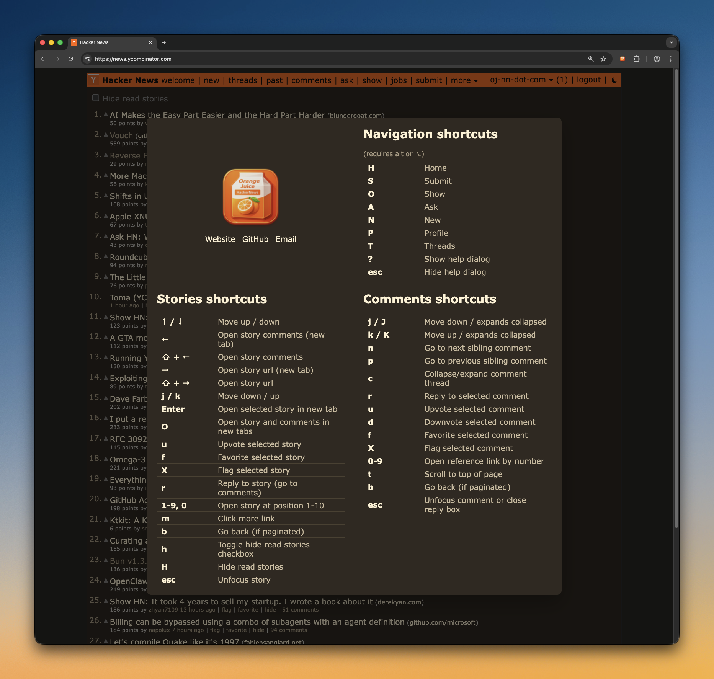
Render Mermaid code blocks into readable diagrams directly in threads.
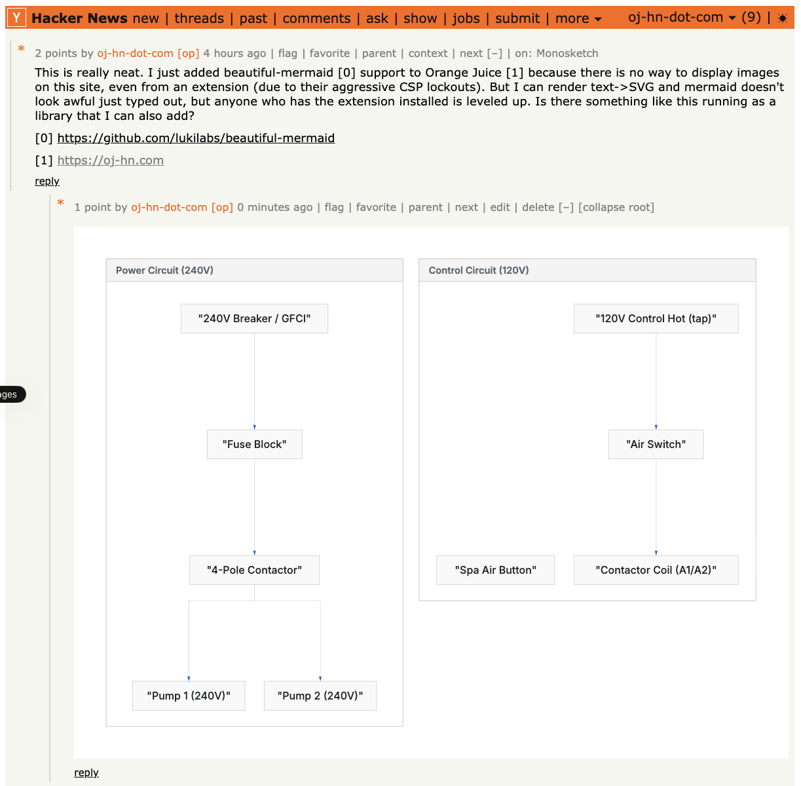
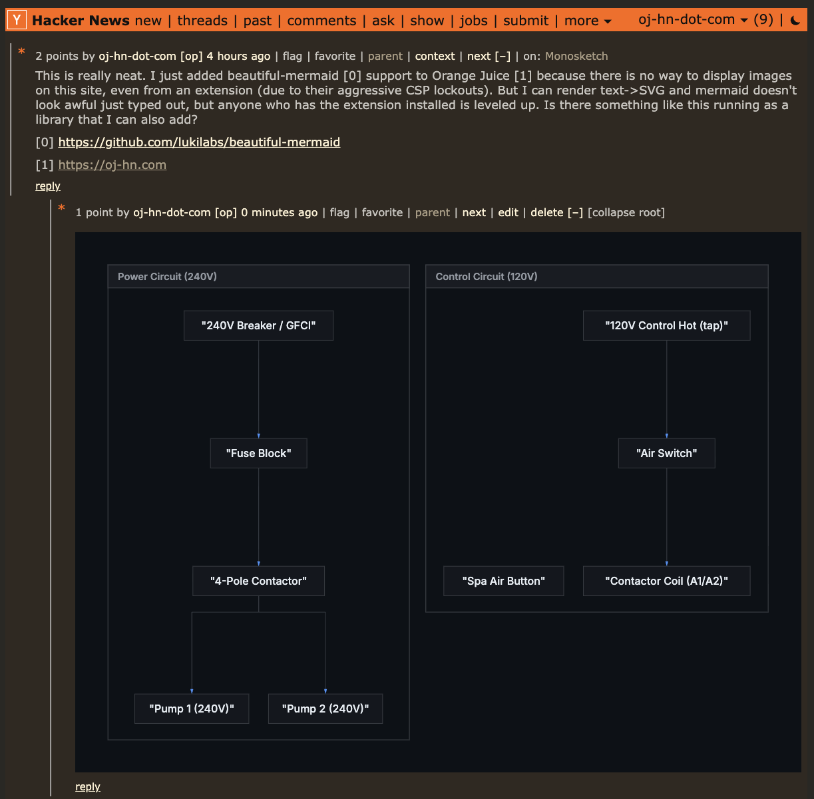
And too many other features to list.
Orange Juice is designed to be trustworthy by default:
transparent code, clear licensing, and disciplined development.
The full source code is public under the GPLv3 license, so anyone can inspect how it works, verify behavior, and contribute improvements.
AI is used as a pair programmer to speed up implementation and review, but architecture and final decisions are human.
The extension has extensive unit test coverage, quality checks, and automation through CI/CD. This project is intentionally not vibe coded.
Available on Firefox Add-ons for a permanent, auto-updating installation.
Install for FirefoxThen load it into your browser:
chrome://extensions/
.zip
folder
about:debugging#/runtime/this-firefox
manifest.json
file from the extracted folder
{kind=link}
{kind=link}
{kind=link}
{kind=link}
{kind=link}
{kind=link}
{kind=link}
{kind=link}
{kind=link}
{kind=link}
{kind=link}
{kind=link}